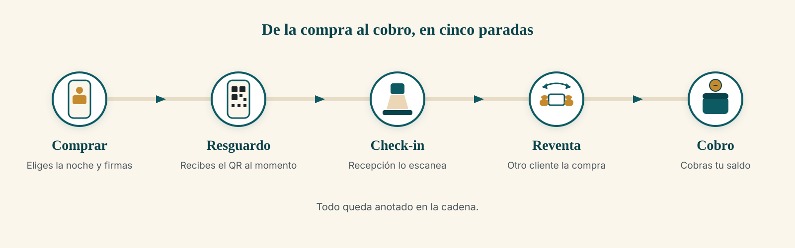
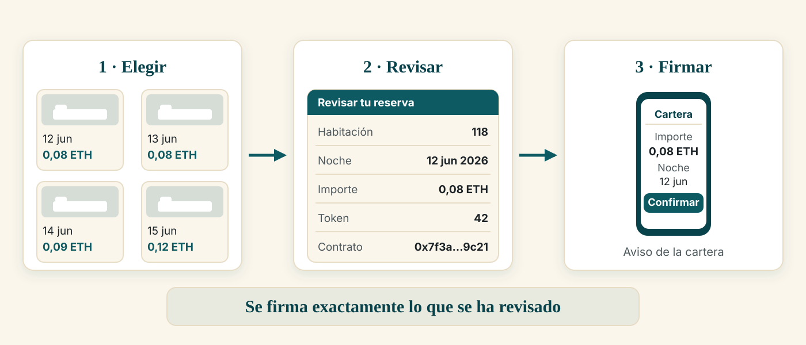
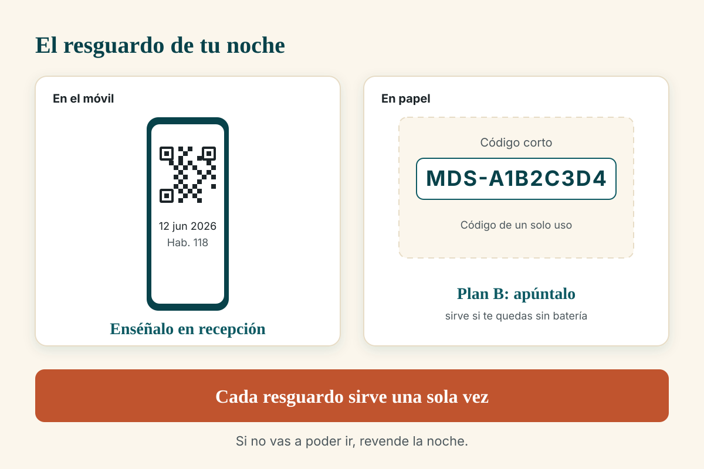
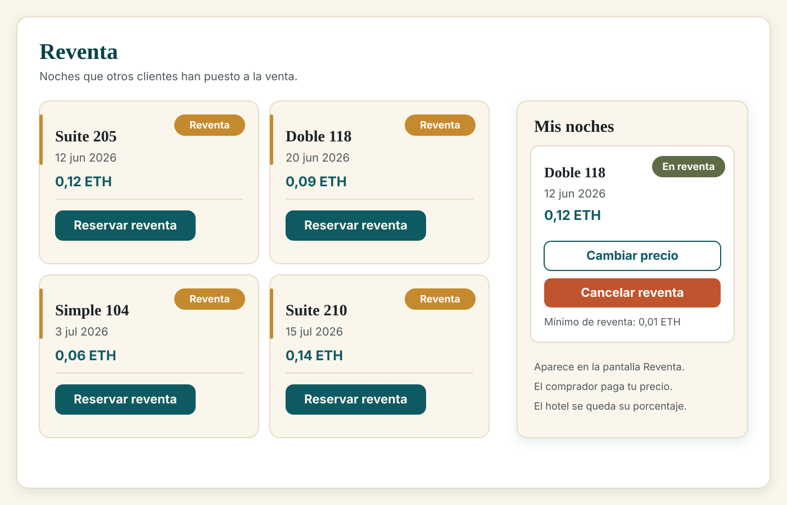

1. Qué es una noche tokenizada y qué compras exactamente
Cada noche de cada habitación del hotel se vende como una ficha digital única. Esa ficha se llama token y se guarda en una blockchain (un libro de cuentas público y compartido donde lo apuntado no se puede borrar). La ficha hace la misma función que una reserva: quien la tiene, tiene esa noche.
El hotel tiene 50 habitaciones: 101 a 130 en la planta baja y 201 a 220 en la primera. Hay tres tipos: simple, doble y suite.
Comprar son tres pasos: elegir → revisar → firmar. Se firma exactamente lo que has revisado, ni más ni menos. Lo que compras es una noche: entras el día de la fecha y sales al día siguiente.
La ficha llega a tu cartera y es tuya: puedes usarla (llegas al hotel, enseñas el resguardo y haces el check-in), revenderla a otra persona en la propia web del hotel, o regalarla o pasarla a otra cartera.
Nunca se te va a pedir tu nombre, tu DNI, tu teléfono ni tu correo. La compra es anónima. Solo se te pedirá un correo si tú quieres recibir el resguardo por email o avisos; en ese caso se usa para enviarte el mensaje y se descarta, no se guarda junto a tu compra.

2. Preparar la cartera y la red
Necesitas una cartera de cripto (wallet: el programa que guarda tu dinero digital y firma tus pagos cuando tú lo apruebas). La más conocida es MetaMask, y también funcionan otras.
- Instálala solo desde la web oficial de la cartera o la tienda oficial de tu móvil o navegador.
- Crea una cartera nueva y apunta la frase de recuperación en papel. Esa frase es la llave de todo tu dinero: quien la tenga puede vaciarte la cartera. No la fotografíes, no la guardes en una nota del móvil y no se la mandes a nadie. Nadie del hotel te la va a pedir nunca.
- Añade la red del hotel. Si estás en la red equivocada verás el aviso «Estás en la red equivocada.» con un botón Cambiar de red. Púlsalo y acepta en la cartera.
- Consigue dinero de prueba. Como hoy es una red de pruebas, hay un botón «Conseguir ETH de prueba» que te manda saldo para practicar. Verás «¡Listo! Recibiste ETH de prueba en tu wallet.». Solo se puede pedir una vez cada 24 horas.
- Conecta la cartera con Conectar wallet y acepta. Verás «Conectado: 0x…» con tu dirección.
Si algo de este apartado falla, la propia pantalla lo dice: «No detectamos una wallet web3.» (instálala y recarga), «Estás en la red equivocada.» (pulsa Cambiar de red), «Tu wallet aún no tiene esta red…» (acepta el aviso de la cartera y repite) o «Has cancelado el cambio de red…» (vuelve a pulsar el botón).
3. Comprar paso a paso
Dos pantallas distintas, no las confundas: la portada muestra solo las noches nuevas, las que vende el hotel, y la pantalla «Reventa» muestra las noches que otras personas compraron y ahora revenden. Las dos se compran igual, pero el dinero va a sitios distintos: en la portada pagas al hotel; en la reventa pagas al cliente que la revende (y el hotel se lleva su porcentaje).
Elegir
- Entra en la web. Puedes leerla en español, inglés y ruso (selector de idioma arriba) y funciona en el móvil.
- Recorre las Noches disponibles: cada tarjeta muestra foto, número de habitación, tipo, fecha y precio. Si quieres, afina con los filtros: tipo de habitación, mes, precio máximo, rango de fechas y búsqueda por número de habitación.
- Pulsa Reservar (en la pantalla de reventa el botón dice Reservar reventa). Si aún no has conectado la cartera, el botón te pedirá Conectar para reservar o Cambia de red para reservar.
- El catálogo muestra las noches de los próximos 90 días. Al llegar al final, la página lo dice.
También puedes pedirla hablando: en la pantalla Asistente le escribes lo que buscas (por ejemplo «¿hay alguna suite disponible en junio?»). El asistente prepara la reserva, pero la firma la haces tú en tu cartera.
Revisar
Se abre la ventana «Revisar tu reserva», con este aviso: «Esto es lo que vas a firmar. Comprueba el importe y la noche antes de confirmar.»
| Línea | Qué es |
|---|---|
| Habitación | El número de habitación que estás comprando. |
| Noche | La fecha. |
| Importe | Lo que vas a pagar, en ETH. |
| Token | El identificador de la noche en la cadena. |
| Contrato | El destino del pago: la dirección del programa del hotel. |
Antes de dejarte firmar, el sistema vuelve a comprobar el precio en la cadena («Verificando el precio on-chain…»). Si el precio hubiera cambiado justo entonces, verás «El precio de esta noche acaba de cambiar; por tu seguridad no la firmamos con un importe antiguo.» y no se firma nada: vuelves a abrir la reserva y ya está.
Firmar
- Comprueba lo anterior con calma y pulsa Confirmar y firmar. Recuerda: «No se cobrará nada hasta que firmes.»
- Se abre tu cartera. Mira en la cartera lo que te muestra y apruébalo.
- Verás el avance: «Confirma en tu wallet» → «Reservando tu noche…» → «¡Noche reservada!», y después «La noche ya es tuya. Aparecerá en “Mis noches”.»
| Lo que ves | Qué significa | Qué hacer |
|---|---|---|
| «Has cancelado la firma. Puedes intentarlo de nuevo cuando quieras.» | Cerraste el aviso de tu cartera. No se ha cobrado nada. | Repite la compra. |
| «Saldo insuficiente para reservar esta noche.» | No tienes bastante ETH para la noche más el pequeño coste de la operación. | Pide saldo de prueba o elige una noche más barata. Te dice cuánto te falta. |
| «No se pudo completar la reserva…» / «No se completó la reserva.» / «No se realizó ningún cargo…» | La operación no salió. No se ha cobrado nada. | Comprueba la red y repite. |
| «Puedes cerrar: la reserva continúa y aparecerá en “Mis noches”.» | La operación ya está en marcha. | Si cierras, no se pierde. Espera y mira en Mis noches. |
| «Ventas en pausa» | El hotel ha detenido las ventas. | No es un error tuyo. Vuelve más tarde. |

4. Qué mirar en la pantalla de revisión antes de firmar
Cinco comprobaciones, siempre, aunque tengas prisa:
- La habitación es la que querías. Un número distinto es otra habitación.
- La fecha es la noche correcta: fíjate en el día y el mes.
- El importe es el que viste en la tarjeta, sin sorpresas.
- El destino (la línea «Contrato») es siempre el mismo en todas las compras del hotel. Si alguna vez ves ahí otra dirección, cancela y avisa al hotel: podría ser un fraude.
- La cartera que firma es la tuya. Y la regla que vale para todo: lo que firma tu cartera tiene que coincidir con lo que leíste.
5. Cómo recibes el resguardo
El resguardo es lo que demuestra que esa noche es tuya. Al comprar, el sistema lo emite atado a tu cartera: por eso nadie más puede generar un resguardo por ti. Lo tienes de tres formas: en pantalla (el código QR, para enseñarlo en recepción desde el móvil), por email (si quieres, puedes pedir que te lo envíen a un correo: ese correo no se guarda en la base de datos del hotel ni se asocia a tu cartera, se usa para el envío y se descarta) o impreso o apuntado (el resguardo lleva también un código corto que empieza por MDS-, por ejemplo MDS-A1B2C3D4, que sirve si te quedas sin batería; apúntalo en un sitio seguro: es tu plan B).
El resguardo es de un solo uso. En cuanto recepción lo escanea, queda gastado para siempre. Si no vas a poder ir, lo que hay que hacer es revender la noche.

6. Revender una noche que no vas a usar
Se hace en la pantalla Mis noches, con la cartera conectada.
- Entra en Mis noches (verás tus noches en dos pestañas: Próximas y Pasadas).
- Escribe el precio de reventa en ETH para la noche que no vas a usar.
- Pulsa Listar y firma en la cartera. Verás la etiqueta «En reventa».
- Tu noche aparecerá en la pantalla Reventa, visible para cualquiera. Cuando alguien la compre, la noche pasa a ser suya y a ti se te abona el dinero.
Tres reglas que conviene saber:
- El hotel se lleva un porcentaje de cada reventa: 5 % en simple y doble, 10 % en suite. Se descuenta de lo que cobras tú; el comprador paga el precio que anunciaste.
- Hay un precio mínimo. No se puede revender a un precio simbólico: si pones un precio demasiado bajo, verás «El precio está por debajo del mínimo de reventa que fija el hotel.» y el anuncio no se crea. En la red de pruebas el mínimo es de 0,01 ETH.
- Una noche ya usada no se puede revender: «Esta noche ya se consumió en recepción y no puede revenderse.» Puedes cambiar el precio (Cambiar precio) o quitar el anuncio (Cancelar reventa).
| Mensaje | Qué significa | Qué hacer |
|---|---|---|
| «El precio debe ser mayor que 0.» | Precio vacío o en cero. | Escribe un precio mayor que cero. |
| «El precio está por debajo del mínimo de reventa que fija el hotel.» | No llega al mínimo. | Sube el precio. |
| «Esta noche ya se consumió en recepción y no puede revenderse.» | Ya se hizo el check-in. | No se puede revender. |
| «La noche ha expirado y no puede listarse.» | La fecha ya pasó. | No se puede revender. |
| «No eres la propietaria de esta noche.» | La noche no está en la cartera conectada. | Conecta la cartera con la que la compraste. |
| «Esta noche no está en reventa.» | Cancelas un anuncio que ya no existe. | Recarga la página. |

7. Cómo cobrar el dinero de una reventa
Cuando alguien compra tu noche, el dinero no llega solo a tu cartera: queda a tu nombre esperando a que lo reclames. Es a propósito, para que lo cobres cuando te interese.
- Entra en Mis noches con tu cartera conectada.
- Si tienes dinero pendiente verás «Saldo pendiente» con el aviso «Tienes fondos de reventas listos para cobrar.» Pulsa «Cobrar …» (te dice el importe exacto) y firma en tu cartera.
Si el cobro falla, verás «No se pudo completar la operación. Revisa la red y vuelve a intentarlo.». No se pierde nada: el saldo sigue esperándote. Cada vendedor cobra el suyo por separado y el hotel no toca ese dinero.
8. Cuando llegas al hotel (check-in)
- Preséntate en recepción y enseña tu resguardo: el QR desde el móvil o el código que empieza por
MDS-si lo llevas impreso o apuntado. - Recepción lo escanea y en unos segundos el check-in queda anotado en la cadena, es decir, registrado de forma definitiva. La pantalla de recepción muestra la habitación, la fecha y el código de la operación.
- El mismo resguardo no sirve dos veces: si alguien intentara usarlo otra vez, el sistema responde «ya usado». Es tu protección. Y si dos puestos lo escanean a la vez, el segundo recibe «check-in en proceso» y espera unos segundos.
- Si revendiste la noche, tu resguardo antiguo ya no sirve: la noche es de quien te la compró. El sistema lo detecta y pide el resguardo del titular actual.
- En el mostrador, como siempre, se identifica al viajero con DNI o pasaporte para el registro de viajeros que exige la ley. Eso no lo hace la web y no se guarda en la web.
9. Preguntas frecuentes
¿Puedo cancelar una compra? No. La compra se firma en la cadena y no se puede deshacer: no hay botón de cancelación ni devolución. Lo que sí puedes hacer es revender la noche en la pantalla Reventa: si alguien la compra, recuperas tu dinero (menos el porcentaje del hotel).
¿Puedo revenderla a cualquier precio? No: hay un precio mínimo y el hotel se lleva su porcentaje (ver el apartado 6). ¿Qué pasa si pierdo el resguardo? Nada grave, si la noche sigue siendo tuya: el resguardo se puede volver a emitir para el dueño de la noche, y solo para él, porque el sistema exige la firma de tu cartera para generarlo. Por eso conviene no perder el acceso a tu cartera. Si conservas el código MDS- apuntado, recepción también puede usarlo.
¿Por qué me piden un código de 6 dígitos en la web del hotel? A ti, no. El código de 6 dígitos es para el personal del hotel (el dueño y recepción) como segunda llave de su acceso. Tú te identificas con tu cartera. Si alguna web o algún mensaje te pide ese código diciendo que es del hotel, desconfía: nadie del hotel debe pedirte códigos ni tu frase de recuperación.
¿La web guarda mis datos? No pide ninguno: no hay registro, ni nombre, ni DNI, ni teléfono. Lo que sí es público por diseño es lo que queda en la cadena: el movimiento de la noche entre direcciones de cartera, el importe y la fecha. Tu dirección de cartera es pública (como un número de cuenta) pero no dice quién eres. Si pides el resguardo por correo, ese correo se usa para el envío y se descarta.
¿Puede el hotel quitarme la noche que he comprado? No. Las noches que el hotel retira a las 12:00 son solo las suyas, las que no se vendieron. Una noche ya vendida no se puede retirar.
10. Límites honestos de hoy
- Todo funciona en una red de pruebas. Sirve para practicar y validar el sistema; no es todavía una red donde el hotel pueda vender al público. Es una decisión pendiente del dueño.
- Con mucha gente a la vez, la web se queda corta: aguanta bien unas 50 personas comprando a la vez (medido); con 200 a la vez en un solo servidor falla parte de las peticiones. Está identificado y tiene arreglo.
- El pago con tarjeta no está operativo: hoy solo se paga con cartera de cripto.
- Los pases para el móvil (los de las carteras de Apple o Google) necesitan credenciales que aún no están; hoy el resguardo es el QR o el código
MDS-. Las fotos de las habitaciones son provisionales y los avisos al móvil solo llegan si los aceptas (y nunca bloquean una compra).
Guía del comprador · Hotel Marina del Sol · si algo de esta guía no coincide con lo que ves en pantalla, haz caso a la pantalla y avisa al hotel.